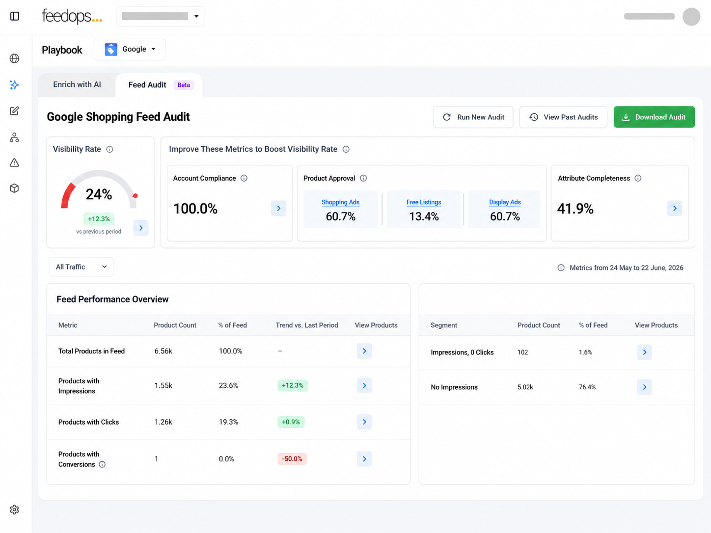
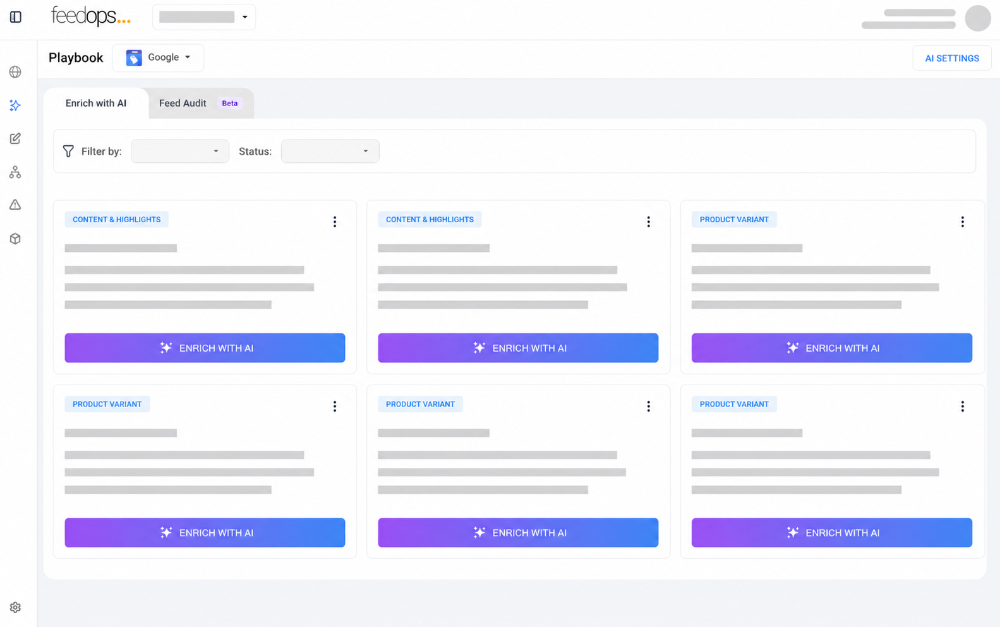
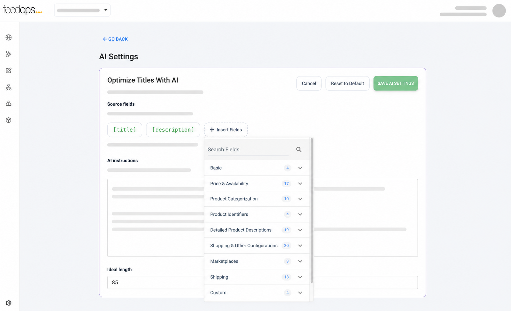
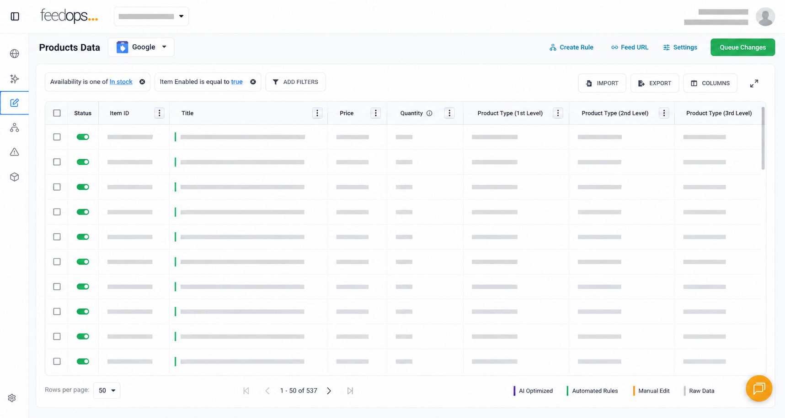
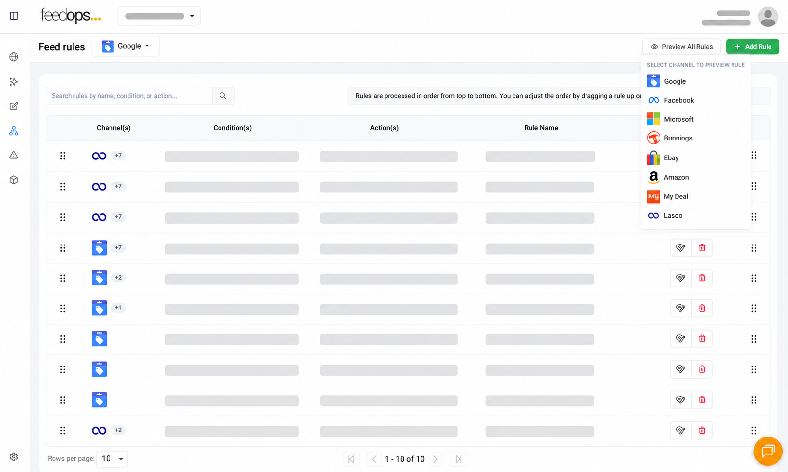
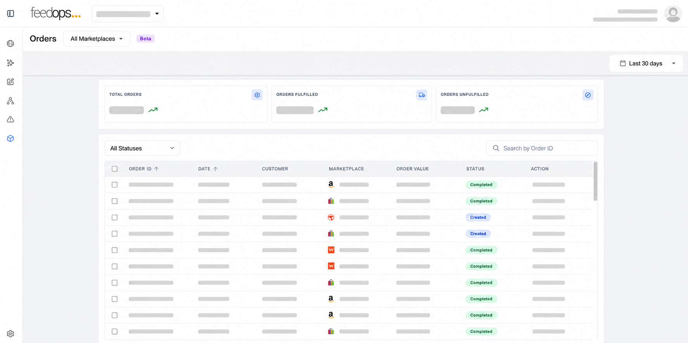
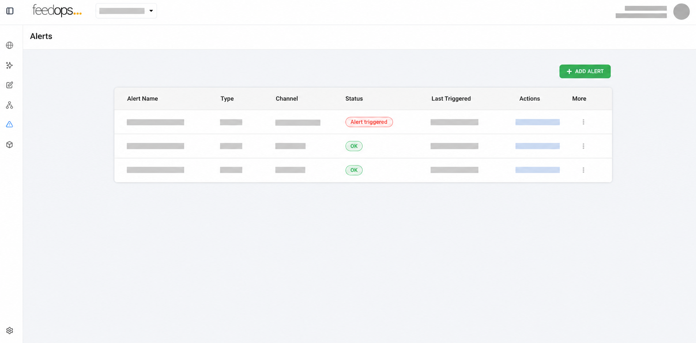
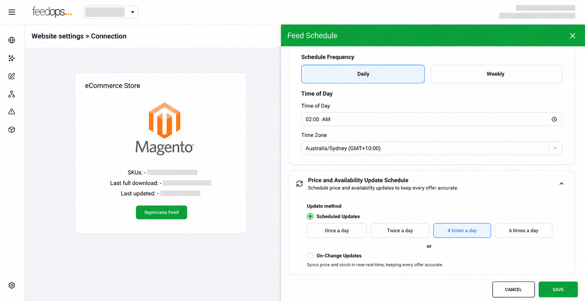
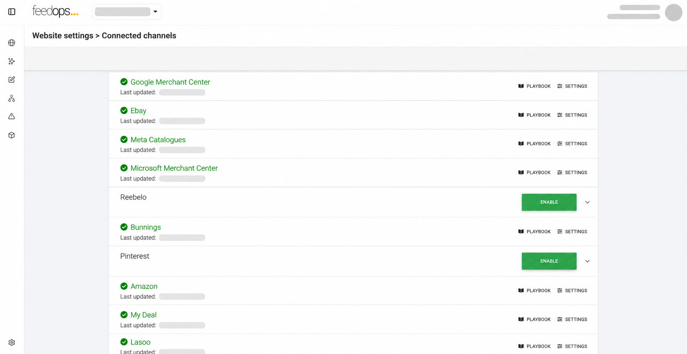

Can FeedOps automate product feed rules?
Yes. FeedOps lets teams build feed rules with conditions and actions, including stock logic, channel exclusions, title templates, categorisation, and other repeatable product data changes.
Product Feed Platform
FeedOps gives e-commerce teams and media agencies a product feed platform to audit, control, enrich, and improve product feed performance across shopping channels and marketplaces.
A practical fit conversation with a feed-gap review and a short platform walkthrough where it helps.
Playbook
The FeedOps Playbook brings audit data, AI enrichment, and feed improvement agents into one workflow so teams can see what is holding performance back, choose the right action, and improve product feed performance with a repeatable process.

Feed Audit
Start with a feed audit that measures visibility rate and highlights the metrics most likely to improve performance, including account compliance, product approval, and attribute completeness. Attribute completeness shows which missing or weak product attributes are limiting visibility, searchability, and discoverability.
Start a free audit
Enrich with AI
Use AI agents to improve titles, product types, variants, content highlights, and missing attributes across the feed. FeedOps helps turn repeatable enrichment work into guided workflows that can be reviewed, applied, and scaled across large product catalogues.

AI Settings
Set the instructions that guide each enrichment workflow, including brand voice, target country, language, category rules, attribute requirements, and specific instructions, so the output matches the brand, market, category, and commercial goal before changes are applied across the feed.
Product Data
Product Data gives teams a channel-level view of what is available, in stock, and ready to send, with tools to filter products, inspect channel data, make single product edits, apply bulk edits, import updates, export data, and choose between manual or automated changes.


Feed Rules
Feed Rules turn repeatable feed decisions into automated conditions and actions, so teams can control what is in stock, what is excluded, what is sent to each channel, and how product data is augmented. Build title templates, apply structured categorization, and automate feed logic wherever a condition and action can describe the change.
Orders
Orders gives ecommerce teams a clear view of current and recent marketplace order activity, including what has processed, what is processing, and what needs attention. Review current orders and recent order history, identify orders that have not processed, and find mismatches that may be stopping orders from flowing through.


Alerts
Alerts help ecommerce teams monitor feed health, approval status, channel errors, marketplace order issues, and sync problems, so teams can see when products are approved or disapproved, when feed information needs attention, or when orders, shipping, or sync processes are blocked.
Connections
Connections helps teams check credentials, review API configuration, control mappings, set feed download schedules, and control how product data is sent from the ecommerce platform into FeedOps, including bulk category inclusion or exclusion. See the supported channels.


Connected Channels
Connected Channels lets teams control where product data is sent, with available channels depending on the FeedOps plan and channel setup. Add or remove destinations for shopping, remarketing, affiliate, marketplace, and product discovery workflows.
Account Settings
Once you are on a paid plan, Account Settings gives teams the controls needed to add websites, invite users, and update account details when the business, team, or feed setup changes.
Software FAQ
Yes. FeedOps lets teams build feed rules with conditions and actions, including stock logic, channel exclusions, title templates, categorisation, and other repeatable product data changes.
Update frequency depends on the ecommerce connection, channel, feed schedule, and plan setup. FeedOps supports scheduled product data updates, feed downloads, and channel-ready exports.
FeedOps includes order views for marketplace order activity, processing status, failed orders, recent order history, and mismatch issues that may stop orders from flowing correctly.
Yes. FeedOps supports AI enrichment for titles, product types, variants, content highlights, missing attributes, and other product data improvements, with settings for brand, market, language, and category rules.
FeedOps gives teams product data views, manual edits, automated edits, imports, exports, and queue controls so changes can be reviewed before updated product data moves through feed workflows.
Product feed software can support shopping channels, marketplaces, remarketing platforms, affiliate feeds, paid media destinations, and product discovery channels, depending on plan and setup.